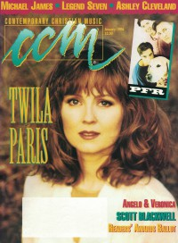

CMnexus
: Contemporary Christian culture, music, and media.
|
|
CCM, Jan 1994, vol. 16, iss. 7
| Cover |
|---|
|  | | Writers in this Issue |
|---|
Balentine, Jolinne
Brown, Bruce A.
Carpenter, Bil
Davis, Michelle
Fischer, John
Goff, Sissy
Granger, Thom
Hefner, April
Newcomb, Brian Quincy
Orteza, Arsenio
Price, Deborah Evans
Rumburg, Gregory J
Selby, Derek Wesley
|
Cover Feature:
- "Coming Back To Life" by Deborah Evans Price
Article:
- "Man To Man" by Jolinne Balentine
- "A 20/20 View of Blind Faith" by Derek Wesley Selby
- "In The Shadow of Success" by Brian Quincy Newcomb
- "The Real Thing" by Bil Carpenter
- "Off The Leash" by April Hefner
Christian Musician:
- "Scott Blackwell's Dance N'Soul" by Bruce A. Brown
In The News:
- "Tennessee Performing Arts Center, Nashville, TN" by Gregory J Rumburg
Faces to Watch:What's New:John Fischer:
- "After The Fires" by John Fischer
|
|